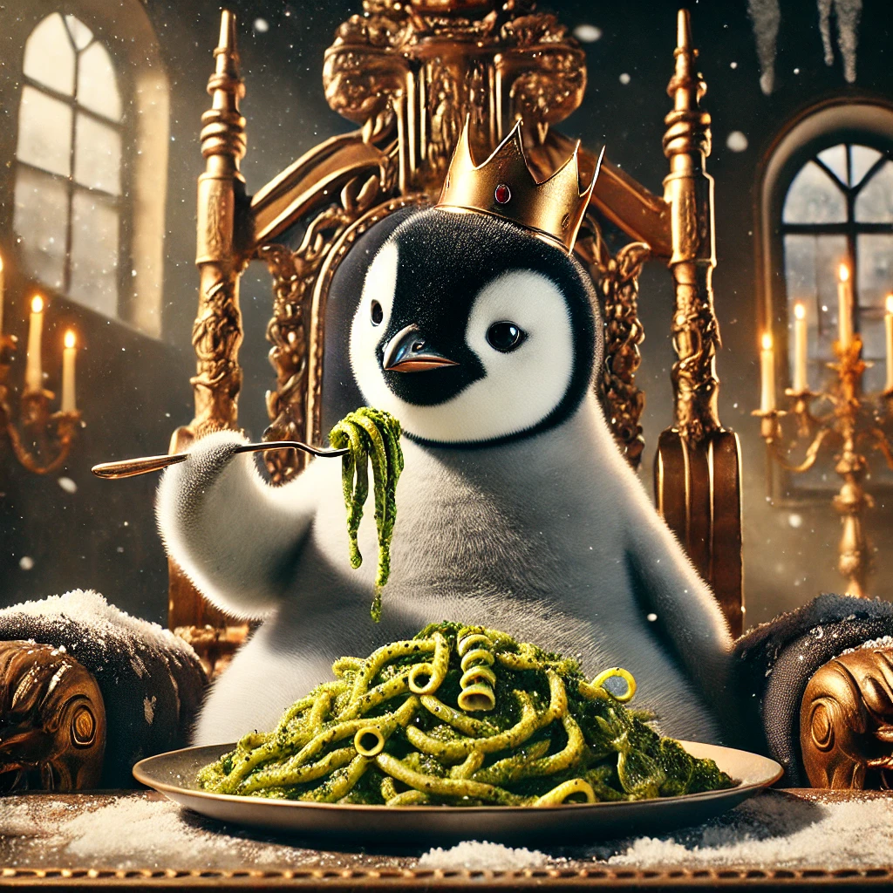

Königspinguine sind mittel
Hyänen sind ein bissle besser
Königspinguine: Die Giganten der Pinguinwelt
- Größe und Gewicht: Königspinguine sind die zweitgrößte Pinguinart und erreichen typischerweise eine Höhe von
etwa 70 bis 90 Zentimetern und ein Gewicht von 10 bis 16 Kilogramm. Sie sind bekannt für ihre auffälligen
orangefarbenen Ohrflecken und das charakteristische schwarz-weiße Gefieder12.
- Fortpflanzung: Diese Pinguine brüten ihre Eier in einer Brutpflegezeit von etwa 55 Tagen aus. Während dieser
Zeit balanciert das Männchen das Ei auf seinen Füßen, um es warm zu halten3.
Pesto: Der Social-Media-Star
- Übergewichtiger Pinguin: Pesto, ein Königspinguin-Küken im Sea Life Melbourne Aquarium, hat mit neun Monaten
bereits
beeindruckende 22,5 Kilogramm erreicht, was ihn zum schwersten Küken in der Geschichte des Aquariums
macht14. Zum
- Vergleich: Er wiegt fast so viel wie seine beiden Pflegeeltern zusammen2.
Beliebtheit: Pesto hat sich in den sozialen Medien einen Namen gemacht und wird liebevoll als "laufende
gefiederte Kack-Maschine" bezeichnet, da er aufgrund seiner hohen Nahrungsaufnahme alle 15 Minuten sein Geschäft
verrichtet24.
- Persönlichkeit: Trotz seines imposanten Körpers ist Pesto für seine kühne und selbstbewusste Art bekannt. Er
liebt
es, seine Pfleger zu begrüßen und ist oft der Erste, der morgens zum Frühstück kommt35.
Fazit
Pesto ist nicht nur ein außergewöhnliches Beispiel für die Größe und das Verhalten von Königspinguinen, sondern
auch
ein unterhaltsames Symbol für die Verbindung zwischen Tierwelt und menschlicher Kultur durch die Namensgebung.
Seine
Popularität zeigt, wie Tiere in sozialen Medien Herzen erobern können und gleichzeitig das Bewusstsein für ihre
Art
fördern.